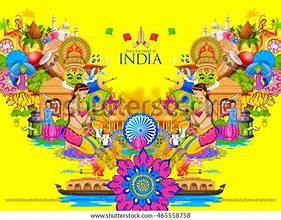

🗣️✨ Languages of Arunachal Pradesh – A Symphony of Indigenous Dialects 📝🌾
📚 1. Nyishi 🌟

Widely Spoken: Nyishi is the most widely spoken language in Arunachal Pradesh, especially in the districts of Papum Pare, Lower Subansiri, and East Kameng.
Script: Written using the Roman script.
Cultural Importance: Rich in folklore, songs, and indigenous traditions.
🕉️ 2. Apatani 📚
Location: Spoken in the Ziro Valley by the Apatani tribal community.
Script: Roman script is used for writing.
Distinct Identity: The Apatani language is known for preserving age-old customs and rituals.
✝️ 3. Adi 🏞️
Spread: Spoken by the Adi community across Siang, East Siang, and Upper Siang.
Cultural Legacy: Oral traditions and folktales form a significant part of the Adi heritage.
🕉️ 4. Galo 🕊️
Region: Predominantly spoken in West Siang, Lower Siang, and parts of Upper Subansiri.
Script: Roman and Devanagari scripts are commonly used.
Cultural Significance: Enriched by songs, festivals, and ceremonial practices.
🕌 5. Monpa 🧘
Region: Primarily spoken in the Tawang and West Kameng districts.
Script: Written in Tibetan script.
Religious Influence: Strongly influenced by Tibetan Buddhism and cultural practices.
🕉️ 6. Wancho 🌼
Region: Spoken by the Wancho tribe in Longding district.
Unique Dialect: Known for its distinct tonal variations and oral history.

🕉️ 7. Tangsa 🏵️
Region: Found in Changlang and Tirap districts.
Linguistic Diversity: Comprises multiple sub-dialects and cultural expressions.
🏹 8. Mishmi 🌾
Location: Predominantly spoken by the Idu Mishmi, Digaru Mishmi, and Miju Mishmi groups.
Rich Oral Tradition: Known for its oral narratives, folklore, and ceremonies.
🪘 9. Nocte 🐾
Region: Spoken in the Tirap district by the Nocte community.
Cultural Vibrance: Nocte language preserves traditional dances and rituals.
🎨 10. Bugun 🏞️
Location: Found in the West Kameng district.
Preservation: Bugun language is on the verge of extinction and efforts are ongoing to preserve its legacy.
🪔 11. Sherdukpen 🌲
Region: Spoken in the West Kameng district.
Cultural Heritage: Preserves indigenous customs, rituals, and oral traditions.
🕊️ 12. Khamti 🕉️
Region: Spoken by the Khamti community in Namsai and Changlang districts.
Script: Written in the Shan script.
🌾 13. Tagin 🧺
Region: Primarily spoken in Upper Subansiri district.
Linguistic Legacy: Known for oral epics, chants, and ceremonial songs.
🕉️ 14. Zakhring 🌿
Endangered Dialect: Spoken by a small population in the Dibang Valley.
Preservation Efforts: Efforts are underway to protect this unique language from extinction.